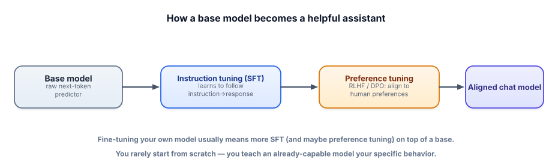

Instruction tuning
This is the most common kind of fine-tuning, and the one that turned raw next-token predictors into the helpful assistants you use every day. Understand it and you understand both how to specialize a model and how ChatGPT-style models are actually made.
From “continues text” to “follows instructions”
Recall from Track 1 that a base model just continues text — ask it a question and it might reply with more questions, because that’s a plausible continuation. Instruction tuning fixes this by training the model on many examples of instruction → good response, so it learns the behavior “when given a request, produce a helpful answer.” Modern assistants add a second phase that aligns them with human preferences. Here’s the pipeline that creates an assistant:

Supervised fine-tuning (SFT) trains the model on instruction→response pairs so it learns to produce the response given the instruction — the workhorse of instruction tuning. The data uses a chat template: the specific formatting (special tokens marking system/user/assistant turns) the model expects. Preference tuning — via RLHF (reinforcement learning from human feedback) or the simpler DPO (direct preference optimization) — further trains the model on comparisons (“response A is better than B”) to align tone, helpfulness, and safety with human preferences.
SFT is the QLoRA setup from Lesson 5.4 pointed at instruction/response data. The crucial detail is the chat template — TRL applies the model’s template so training matches inference.
from datasets import Dataset
from trl import SFTTrainer, SFTConfig
from peft import LoraConfig
# instruction → response pairs, as chat messages (Lesson 5.3 format)
rows = [
{"messages": [
{"role": "user", "content": "A customer is upset about a late order. Reply."},
{"role": "assistant", "content": "I'm so sorry about the delay — here's what I'll do..."},
]},
# ... a few hundred examples in YOUR tone and format ...
]
ds = Dataset.from_list(rows)
trainer = SFTTrainer(
model=model, # 4-bit base from Lesson 5.4
train_dataset=ds, # TRL applies the model's chat template
peft_config=LoraConfig(r=16, lora_alpha=32, task_type="CAUSAL_LM"),
args=SFTConfig(output_dir="sft-out", num_train_epochs=3, learning_rate=2e-4),
)
trainer.train()
# now the model replies in your taught style — without those examples in the promptAfter SFT, the model behaves the way your examples demonstrated — apologetic-then-actionable support replies, say — without needing those instructions/examples in every prompt. That baked-in behavior is the payoff of instruction tuning.
Each model family has its own chat template (the exact special tokens around turns). Training with the wrong template — or serving with a different one than you trained with — quietly wrecks results. Use the tokenizer’s built-in template (libraries like TRL do this for you) and serve with the same template you trained with.
- Instruction tuning (SFT) trains on instruction→response pairs so the model learns to follow requests.
- It’s how base models become assistants, and how you specialize behavior/tone for your task.
- Preference tuning (RLHF/DPO) aligns the model with human preferences using comparisons.
- Always use the correct chat template, and train in the exact format you’ll serve.
- After SFT, the taught behavior is baked in — no need to repeat it in every prompt.
You SFT a base model on Q&A pairs, but at inference you prompt it with a different chat format than you trained on. Results are oddly bad. Why?
Instruction tuning (SFT) turns a base model into…
1. Explain to a teammate the difference between SFT and preference tuning (RLHF/DPO).
2. You want a model that writes release notes in your company’s exact voice. SFT, RLHF, or both? Why?
3. Why does instruction tuning let you shrink your prompts at inference?
▸ Show solutions & reasoning
1. SFT teaches the model to produce a good response by imitating example instruction→response pairs — it learns “what a right answer looks like.” Preference tuning (RLHF/DPO) goes further using comparisons between responses (“A is better than B”), nudging the model toward the more-preferred style/helpfulness/safety. SFT imitates demonstrations; preference tuning optimizes against human judgments of quality.
2. SFT is enough and is the right tool: a consistent voice/format is exactly what imitating good examples teaches. RLHF/DPO is heavier and aimed at nuanced preference trade-offs (helpfulness vs. safety, ranking among good answers) — overkill for “match this voice.” Start with SFT on a few hundred well-written release notes in your voice.
3. Because the behavior you’d otherwise have to specify with a long prompt (role, tone, format, examples) is now in the weights. The model defaults to that behavior, so you can drop most of the instruction/few-shot scaffolding from each call — saving tokens, cost, and latency on every request. You paid once in training to stop paying forever in prompt overhead.
SFT alone has a ceiling: it can only teach the model to imitate the responses you wrote, and writing a perfect demonstration for every situation is hard — sometimes it’s far easier to compare two responses than to author the ideal one. Preference tuning exploits this.
In RLHF, humans rank model outputs, a “reward model” learns to predict those rankings, and the model is then optimized to produce outputs the reward model scores highly — letting it discover good behavior beyond any single demonstration. DPO achieves a similar effect more simply, directly training on preferred-vs-rejected pairs without a separate reward model, which is why it’s become popular for teams doing their own alignment.
For your own projects, the practical takeaway is a ladder: SFT first — it’s simpler, cheaper, and solves most “make it behave like X” needs. Reach for preference tuning only when you need to optimize subtle trade-offs SFT can’t easily capture (nuanced helpfulness, refusing the right things, ranking among already-good answers) and you can collect preference comparisons. Most applied fine-tuning you’ll do is SFT with LoRA on a few hundred excellent examples — understanding RLHF/DPO mainly lets you reason about how the assistants you build on were aligned, and recognize when your task genuinely needs that extra machinery.
You’ve trained a model. The non-negotiable final step is proving it actually got better — without quietly breaking. Next: evaluating a fine-tune.